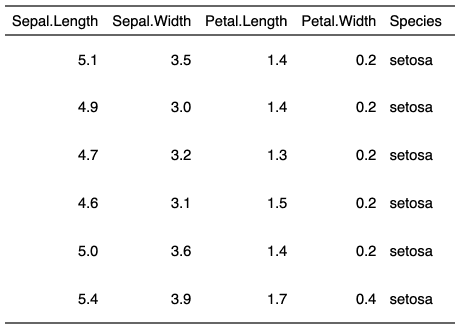
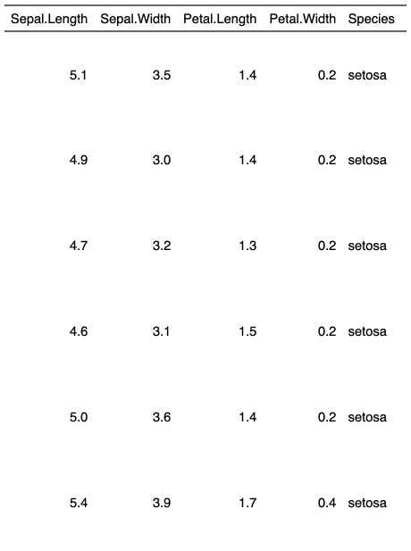

| height {flextable} | R Documentation |
control rows height for a part of the flextable when the line height adjustment is "atleast" or "exact".
height(x, i = NULL, height, part = "body", unit = "in") height_all(x, height, part = "all", unit = "in")
x |
flextable object |
i |
rows selection |
height |
height in inches |
part |
partname of the table |
unit |
unit for height, one of "in", "cm", "mm". |


height_all is a convenient function for
setting the same height to all rows (selected
with argument part).
This function has no effect when the rule for line height is set to
"auto" (see hrule()), which is the default case, except with PowerPoint
which does not support this automatic line height adjustment feature.
Other flextable dimensions:
autofit(),
dim.flextable(),
dim_pretty(),
fit_to_width(),
flextable_dim(),
hrule(),
ncol_keys(),
nrow_part(),
set_table_properties(),
width()
ft_1 <- flextable(head(iris)) ft_1 <- height(ft_1, height = .5) ft_1 <- hrule(ft_1, rule = "exact") ft_1 ft_2 <- flextable(head(iris)) ft_2 <- height_all(ft_2, height = 1) ft_2 <- hrule(ft_2, rule = "exact") ft_2